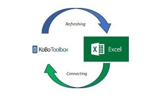

Connexion de l'API V1 de Kobotoolbox avec Microsoft Excel

Contexte et mise en œuvre
Dans la gestion de projets de terrain, le traitement de la donnée vire souvent à la corvée mécanique. On se retrouve quotidiennement à répéter les mêmes actions : extraire depuis Kobo, filtrer les lignes, actualiser les tableaux de bord à la main. En plus d'être pénible, cette méthode expose à des versions de bases de données désynchronisées. L'alternative consiste à automatiser ce flux : grâce à l'API V1 de Kobotoolbox, on peut configurer une passerelle transparente pour qu'Excel interroge directement le serveur.